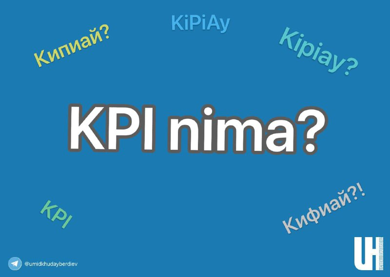

KPI - nima?

Oddiy so’zlar bilan tushuntirib ko’ramiz.
KPI (Key Performance Indicator) samaradorlik ko'rsatkichlarini ishlab chiqish va qo'llash tizimi.
KPI samaradorlikni va sifatni rag’batlantirish maqsadida o’lchash mumkin bo'lgan ko'rsatkichlardir.
Mehnatni baholash va uni ish natijalariga ko’ra rag’batlantirish instrumentidir.
KPI 3 toifa ko’rsatkichlar natijasini oshirishga qaratiladi:
- sifat
- samaradorlik
- tushum
Savdoda KPI:
💰Sotish hajmi.
Bitimlar hajmiga nisbatan hisoblanadi;
👬Sotish soni.
Cheklarning miqdoriy ko'rsatkichi.
🌧Trafik.
Marketing tomonidan jalb qilingan mijozlar (LID) miqdori;
🧾O'rtacha chek.
Bitta tranzaksiyaning o'rtacha qiymati;
⚧Sotish konvertatsiyasi.
Potentsial xaridorlarning real xaridorlarga nisbati;
💵Investitsiya samarasi.
Sof foydaning tashkilotni rivojlantirishga yo'naltirilgan investitsiyaga nisbati.
📶Xizmat sifati.
Ijobiy va salbiy feedbacklar soni.
✅KPI - Natija tomon rag’batlantirish!